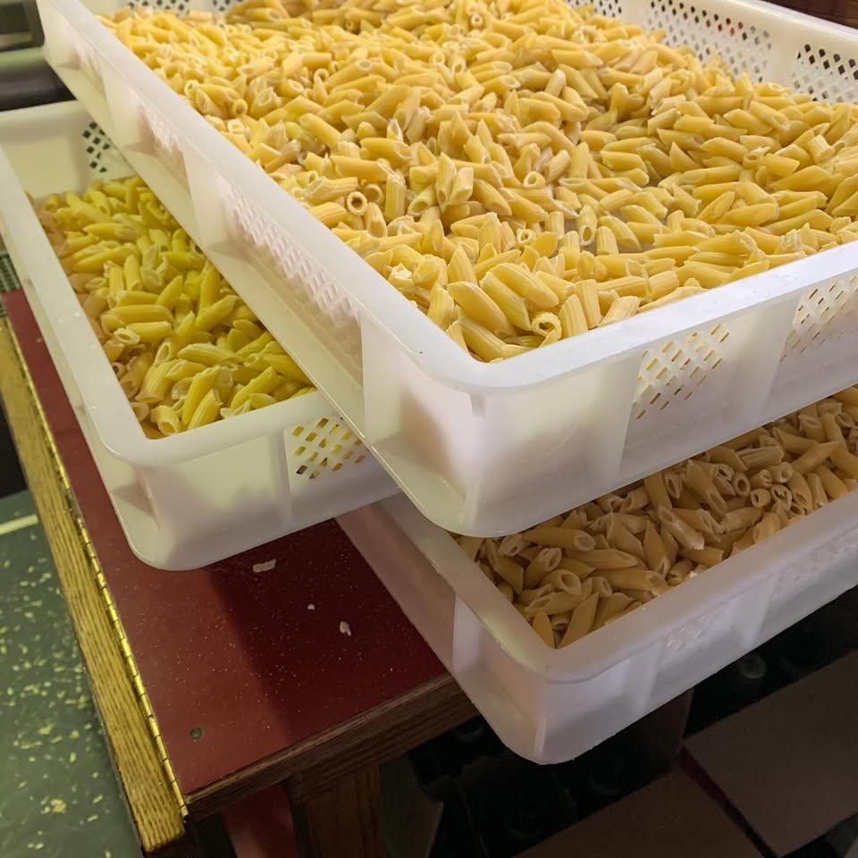
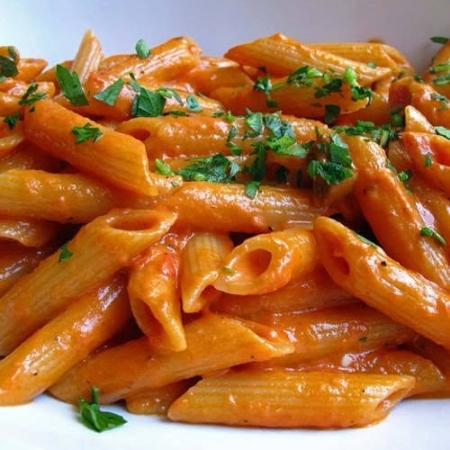

01 / THE CLASSICS
Fresh pasta & sauce
Fresh pasta and homemade tomato sauce — the building blocks of a really good supper.
A little taste of home, Orillia
Fresh pasta, family recipes and Italian favourites to bring home. That's the Tre Sorelle way.

What we're making
Italian comfort food, made with care and ready to make any meal feel like an occasion. Call to ask what's available today.
Fresh pasta and homemade tomato sauce — the building blocks of a really good supper.
Lasagna, manicotti, meatballs, soups and frozen prepared meals for your table.
Take-home pasta meals, flatbreads, lunch specials and stuffed portobello caps.
A look at the good stuff
Real food, from the Tre Sorelle kitchen.



A family story
Tre Sorelle means “three sisters” in Italian. Lisa, Gina and Carla began selling homemade pasta, sauce and meatballs at the Orillia Farmers’ Market.
Family recipes are still at the heart of the Italian food they make to take home today.
Come find us in OrilliaKind words
We’ve never been disappointed. Recently we bought the frozen homemade soup to take home…delicious.
The portions were perfect and the service warm and friendly. Highly recommend, and would happily visit next time in town.
Awesome people and great service. Amazing food
*Review count from a third-party listing; please confirm before publication. Quotes are historical reviews, not Google review excerpts.
Come on by
Find Tre Sorelle in downtown Orillia. Give us a call for today's hours and what's ready to take home.